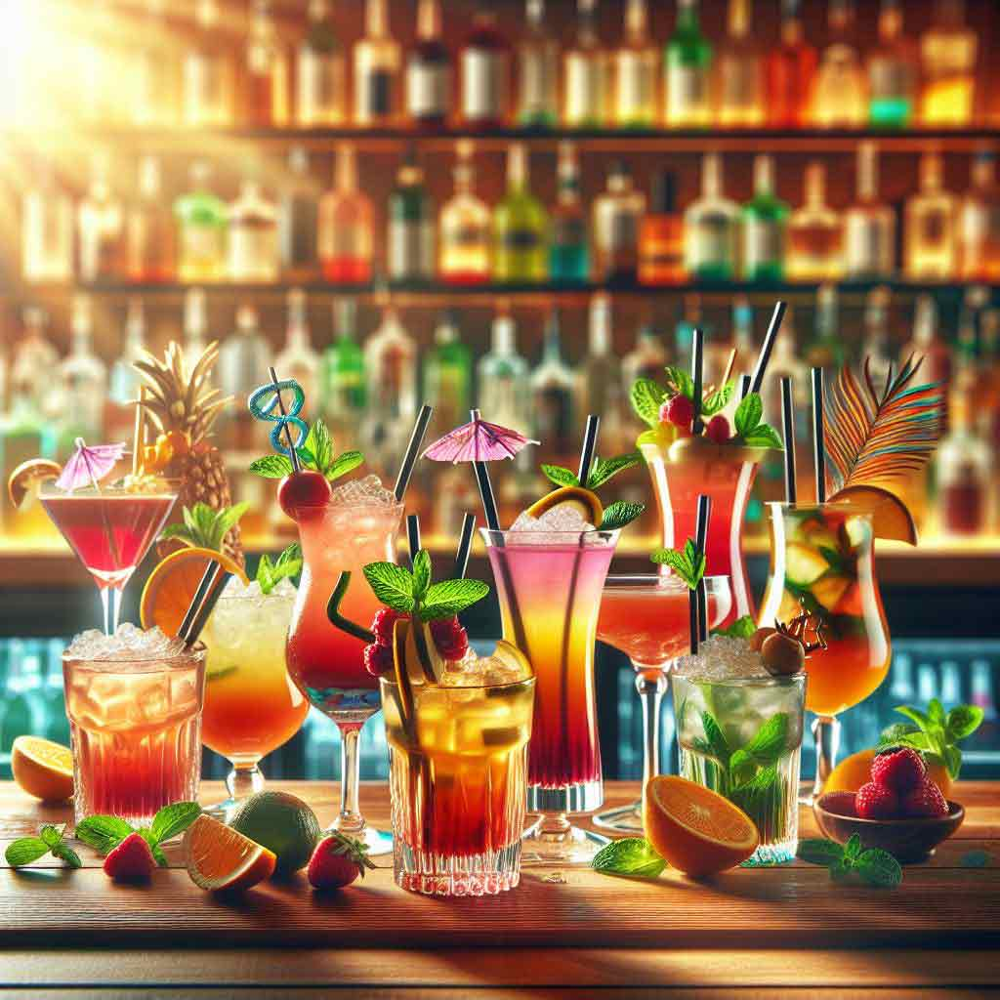
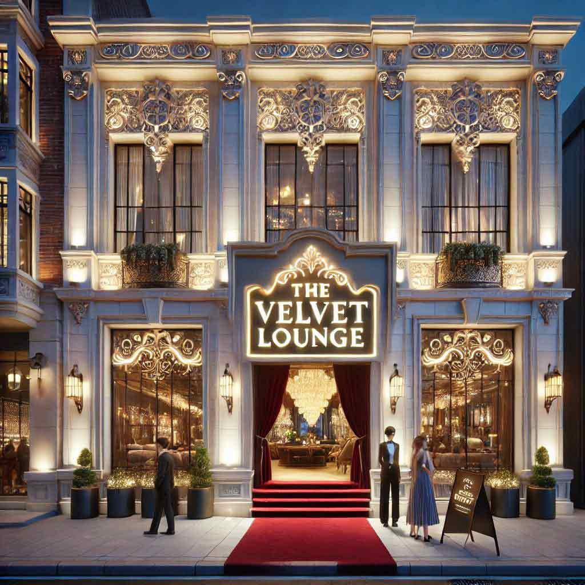
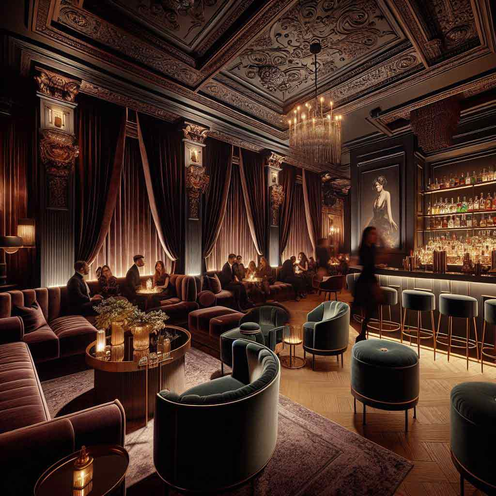

Welcome to The Velvet Lounge. The Velvet Lounge is an upscale nightlife destination offering a
sophisticated atmosphere, signature cocktails, and fine spirits for an unforgettable experience.
Discover The Velvet Lounge
Immerse yourself in sophistication through our gallery, showcasing the Velvet Lounge's chic design, vibrant
ambiance, and unforgettable moments

The cocktails
Signature Creations: The Velvet Lounge offers unique signature cocktails like the "Witch’s
Brew," a Halloween-themed drink made with three types of rum, and the "Velvet Paradise," which
combines Coconut Ciroc with passionfruit, mango, and pineapple.
Exotic Flavors: Many cocktails feature exotic and tropical flavors, such as the "Night of
Passion," which includes Passionfruit Ciroc, guava, lychee, and pineapple, topped with a Don
Julio floater.
Special Presentations: The lounge also offers visually stunning drinks like the "Frozen Peach
Dussè," served in a mini Dussè bottle, and the "Velvet Tower," an 88oz cocktail designed for
sharing with friends.

The outside
Chic and Modern Design: The Velvet Lounge features a sleek, modern facade with dark, luxurious
tones that set the mood for an upscale nightlife experience.
Inviting Entrance: The entrance is designed to be welcoming yet exclusive, with stylish lighting
and elegant signage that draw patrons in while maintaining an air of sophistication.
Prime Location: Situated in a bustling area, The Velvet Lounge is easily accessible and stands
out as a prominent nightlife destination, making it a popular spot for both locals and visitors.

The interior
Luxurious Ambiance: The interior is designed with a chic and moody ambiance, featuring dark,
rich colors and plush velvet furnishings that create a sophisticated and inviting atmosphere.
Elegant Lighting: The lighting is carefully curated to enhance the luxurious feel, with soft,
warm lights that highlight the elegant decor and create a cozy, intimate setting perfect for a
night out.
Stylish Decor: The lounge boasts stylish decor elements, including modern art pieces, sleek
furniture, and a well-appointed bar area that showcases an impressive selection of fine spirits
and signature cocktails.
The Drinks
Crafted with precision and elegance, our signature cocktails blend premium spirits with exquisite flavors
for an unforgettable experience.
Cocktails
Witch's Brew: A mystical mix of dark rum, blackberry liqueur, and citrus zest.
Velvet Paradise: Coconut vodka, passionfruit, mango, and pineapple blend to perfection.
Midnight Affair: Gin, elderflower liqueur, cucumber, and a splash of tonic.
Crimson Kiss: Tequila, blood orange, pomegranate, and a hint of chili.
Golden Hour: Bourbon, peach nectar, honey, and a touch of lemon.
Mocktails
Tropical Glow: Pineapple, passionfruit, coconut water, and a hint of lime.
Berry Bliss: A refreshing mix of strawberry, blueberry, and sparkling soda.
Citrus Breeze: Orange, lemon, and grapefruit juices with a splash of grenadine.
Mint Mojito Mocktail: Lime, mint, and soda water for a refreshing burst.
Lavender Lemonade: Fresh lemonade infused with delicate lavender syrup.
Beers
Velvet Draft Lager: A crisp and light house blend.
Golden Hops IPA: Bold, with a hint of citrus and pine.
Stout Noire: Dark and creamy, with chocolate and coffee notes.
Amber Sunset Ale: Smooth and malty, with caramel undertones.
Velvet Weisse: A refreshing wheat beer with hints of banana and clove.
liquor
Cognac Reserve: Aged to perfection, rich and smooth.
Single Malt Scotch: Peaty and refined for true connoisseurs.
Premium Vodka: Crystal-clear and distilled five times for purity.
Añejo Tequila: Full-bodied with notes of vanilla and spice.
Artisan Gin: Crafted with botanicals for a crisp and aromatic finish.
Contact us
For reservations, event inquiries, or any other questions, please reach out to us:
Phone: +1 (123) 456-7890
Email: contact@velvetlounge.com
Location: 123 Nightlife Avenue, City, Belgium, 2260